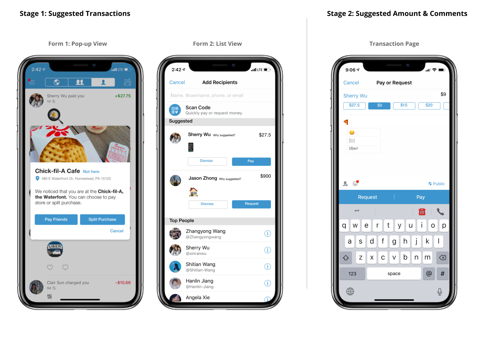
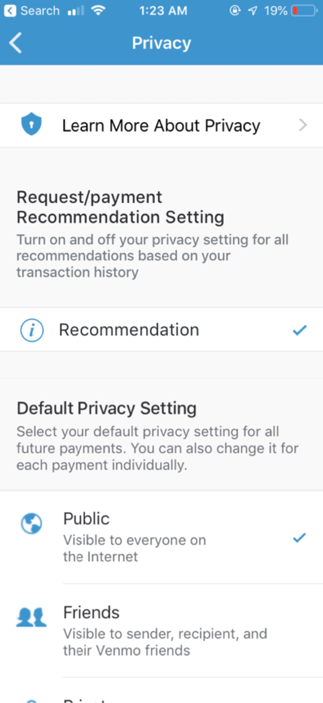
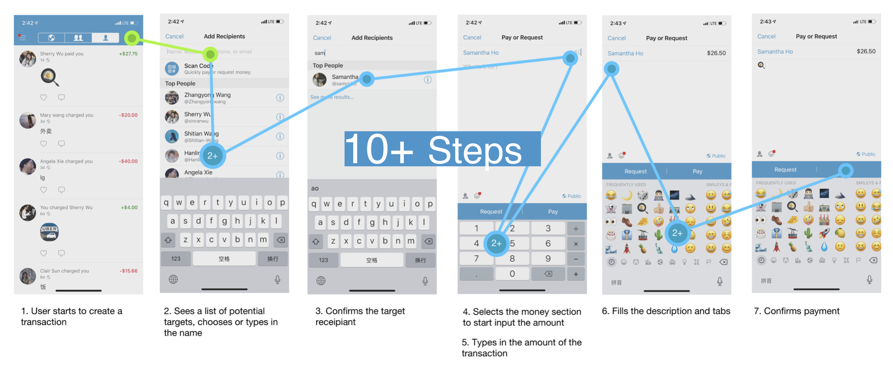
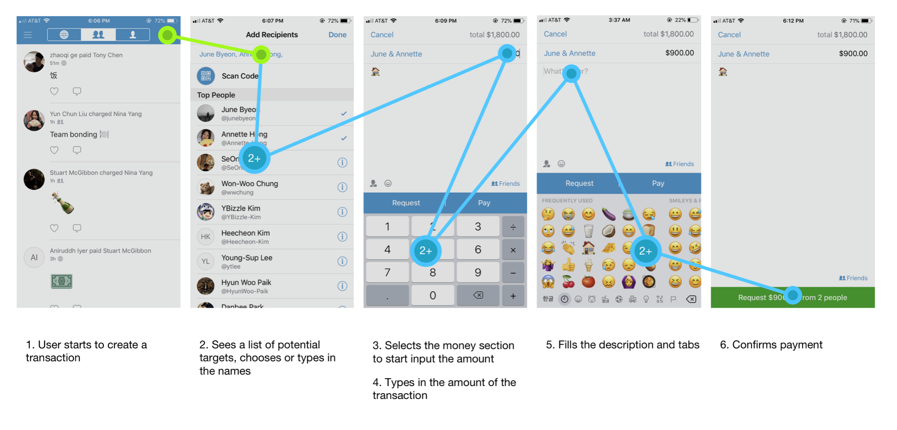
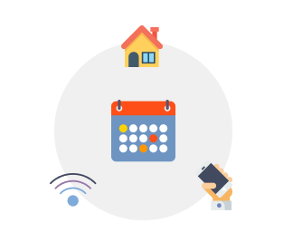
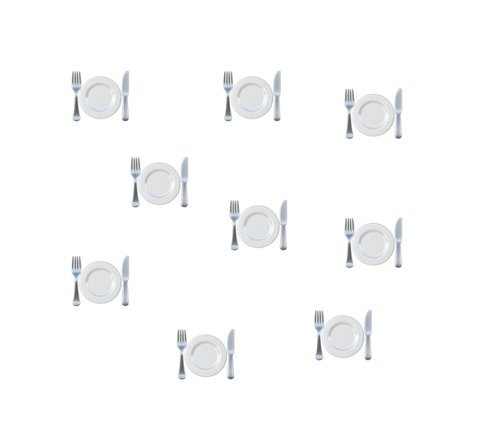
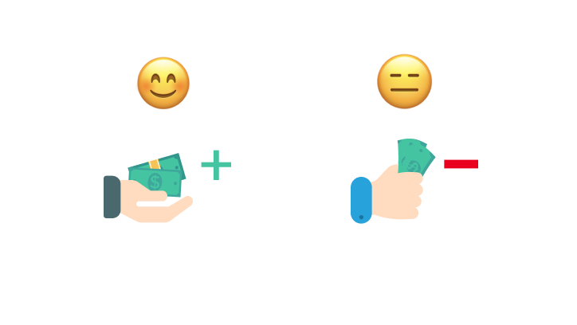
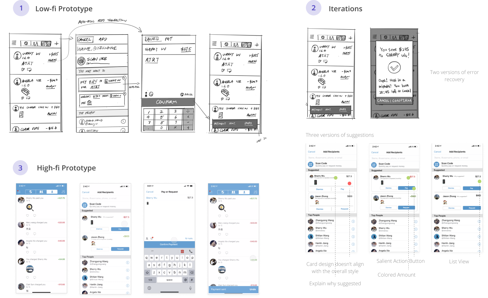
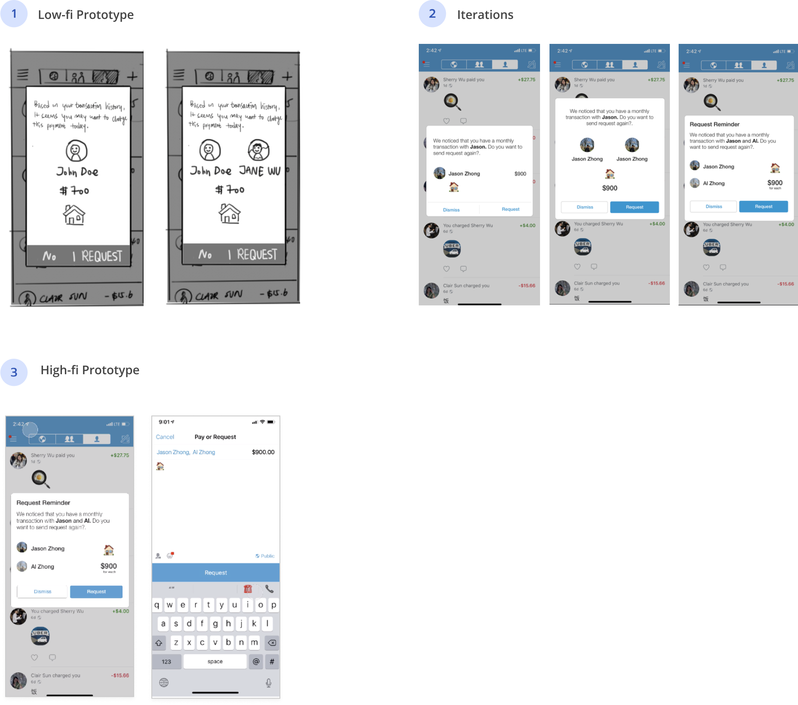
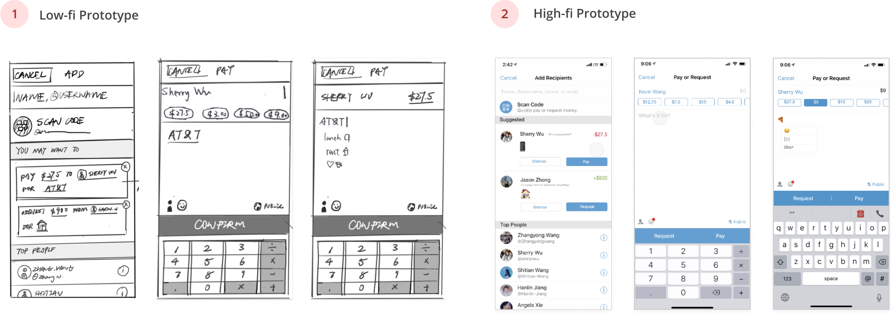

Advisor
Time
April. 2019 (1 month)
Tools
Sketch / InVision
Team
Ja Young Lee / Qian Wang / Ethan Ye
Role
UX Designer
Background
Course project of Design with AI class. The goal is to practice AI adaptation for mobile Apps.
00
Summary
Prompt
How can we further simplify millions of daily Venmo transactions through AI adaptation?
Up to Dec 2018, Venmo has adopted around 27 million total users with around 66 % of American young adults are currently using the app. While people are making payments and requests every day, many of the transactions are frequent, which means they occur repetitively with the same amount, description and recipients. How can we utilize AI technology to make the experience more efficient?
Solution
Suggest transactions in different stages and in different forms.
We designed two types of suggestions: one is the list view, the other is the pop-up view. Pop-up view is used for more certain suggestions, which can be location-based, or user-configured. We also designed suggestions at two stages: one is transaction-level, the other is more detailed on the transaction page.

01
Solution Details

List View: Suggested Transactions
On the "Add Recipients" page, we designed a section showing suggested transactions based time, date, location, history transactions etc. The amount and comment message will be automatically filled.
Error Recovery
Because the workflow is extremely fast, users can accidentally make a transaction, we also designed a recall button for error recovery.
Pop-up: Location-based Transactions
The system may prompt a quick action to pay your friends or split the bill with your friends based on your location. This feature is designed for in-store payments such at restaurants. If your friends also enabled location access, the system can adjust the list to show friends near you at the top.
Suggest Amount and Comments
On the transaction page, the system can also suggest amounts and comments for users to quickly choose from.
Pop-up: Reminders & Suggested Requests
We used the pop-up window to show suggested requests with higher confidence. User can also set reminders themselves to pay friends the rent, utilities, phone bills etc periodically.

Privacy Settings
User might be concerned with their data being used, so all the adaptations are opt-in, and can be configured in the privacy setting. User can also specify which data to grand access for.
02
Research
We first did secondary research and a few user interviews to determine the project focus.
Major Insight
People have recurrent transactions and the workflow can be tiresome.
Through user interviews we learned that people often have recurrent transactions such as monthly rent, phone bills etc. The repeated transactions can be payments or requests. So we concluded the typical payment/request workflow as shown below, and decided to use AI to make the process more efficient.
Payment Workflow

Request Workflow

There're also other findings inspired us for more specific design ideas:
Key Insight 1
Many people have very regular transactions.
Through the interviews, we discovered that people often have transactions like rents, phone bills, utilities etc. on a regular basis. This inspired us to allow user set reminders on their own.

Key Insight 2
People often use Venmo to pay friends for food or drinks.
We don't have the actual log data to identify the most common purpose for transactions on Venmo. But based on our interviews, the No.1 reason for Venmo transactions is paying friends for food. This align with a study we found online, which shows more than half of the top 15 emojis in Venmo are food or drinks. This inspired us to specifically design for payments at restaurants.

top 14 emojis on Venmo
Key Insight 3
People tend to use the same message for transactions.
Interestingly, we discovered that people often use the same comment message for transactions, especially emojis. And they find typing the same amount and description once and once again annoying. This inspired us to design the suggestions for amound and comments.

Key Insight 4
People have higher tolerance for wrong requests rather than payments.
We asked users about using AI to make suggestions, and discovered that people more tolenrance for error if the system is suggesting requests, ranther than payments. This inspired us to design different forms showing different levels of intrusiveness while making suggestions.

03
Design
List View: Suggested Transactions

Pop-up View: Suggested Regular Requests

Transaction Page: Suggested Amount and Comments

04
Reflection
Things we did correctly 😉
This project is about practicing a method to apply AI on simplifying workflows. We successfully identified the workflow with potentials and iterated to find the right way for adaptation.
Things we can improve 🤔
Due to the short time of this project and the educational purpose, we couldn't do thorough research to validate the user value of our idea. We also couldn't do enough user testing on the adapted workflow. So if given more time, I'd focus on these two part more.